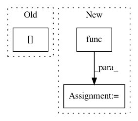

98c3d1f65f075ff960b219afe017cd4cf55bfba7,skopt/gbrt_opt.py,,gbrt_minimize,#,61
Before Change
// Initialize with a random point
Xi[0] = _random_point(lower_bounds, upper_bounds, random_state=rng)
best_x = Xi[0].ravel()
yi[0] = best_y = func(Xi[0])
models = []
After Change
Xi[:n_start] = _random_point(
lower_bounds, upper_bounds, n_points=n_start, random_state=rng)
best_x = Xi[:n_start].ravel()
yi[:n_start] = [func(xi) for xi in (Xi[:n_start])]
best_y = np.min(yi[:n_start])
models = []
In pattern: SUPERPATTERN
Frequency: 3
Non-data size: 3
Instances
Project Name: scikit-optimize/scikit-optimize
Commit Name: 98c3d1f65f075ff960b219afe017cd4cf55bfba7
Time: 2016-04-19
Author: betatim@gmail.com
File Name: skopt/gbrt_opt.py
Class Name:
Method Name: gbrt_minimize
Project Name: scikit-optimize/scikit-optimize
Commit Name: 4af750bec058da0cf5d4a3245a443549b9d7fd33
Time: 2016-04-05
Author: manojkumarsivaraj334@gmail.com
File Name: skopt/dummy_opt.py
Class Name:
Method Name: dummy_minimize
Project Name: commonsense/conceptnet5
Commit Name: ebe6418f1ffc94dc7661abe765482f268d4b823a
Time: 2017-03-14
Author: joanna.teresa.duda@gmail.com
File Name: conceptnet5/vectors/evaluation/analogy.py
Class Name:
Method Name: tune_pairwise_analogies